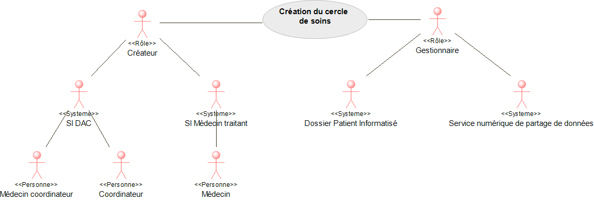

Links: Table of Contents | QA Report | Historique des versions Documentation | New issue
Show Usage
Liens: Table des matières | Rapport de QA | Historique des versions Documentation | New issue
https://hl7.fr/ig/fhir/core/CodeSystem/fr-core-cs-v2-0203
https://hl7.fr/ig/fhir/core/CodeSystem/fr-core-cs-v2-0445
https://hl7.fr/ig/fhir/core/CodeSystem/fr-core-cs-v2-3307
https://mos.esante.gouv.fr/NOS/TRE_R13-Commune/FHIR/TRE-R13-Commune
https://mos.esante.gouv.fr/NOS/TRE_R216-HL7RoleCode/FHIR/TRE-R216-HL7RoleCode
https://mos.esante.gouv.fr/NOS/TRE_R260-HL7RoleClass/FHIR/TRE-R260-HL7RoleClass
https://mos.esante.gouv.fr/NOS/TRE_R345-TypeIdentifiantAutre/FHIR/TRE-R345-TypeIdentifiantAutre
This fragment is available on fr/index.html
This publication includes IP covered under the following statements.
| Type | Reference | Content |
|---|---|---|
| web | esante.gouv.fr |
|
| web | esante.gouv.fr | Site de l'ANS |
| web | interop.esante.gouv.fr | Documentation |
| web | esante.gouv.fr |
IG © 2020+ Agence du Numérique en Santé (ANS) - 2-10 Rue d'Oradour-sur-Glane, 75015 Paris
.
Package ans.fhir.fr.cds#2.0.1 based on FHIR 4.0.1
.
Generated
2026-07-10
Links: Table of Contents | QA Report | Historique des versions Documentation | New issue |
| web | interop.esante.gouv.fr | Links: Table of Contents | QA Report | Historique des versions Documentation | New issue |
| web | github.com | Links: Table of Contents | QA Report | Historique des versions Documentation | New issue |
| web | solidarites-sante.gouv.fr |
|
| web | esante.gouv.fr |
|
| web | en.wikipedia.org | Both Bundle.link and Bundle.entry.link are defined to support providing additional context when Bundles are used (e.g. HATEOAS ). |
| web | github.com | Modifications apportées dans cette release : |
| web | github.com | Mise à jour des diagrammes : passage au format plantUML et correction de liens erronés vers les profils #46 #47 |
| web | github.com | Mise à jour des diagrammes : passage au format plantUML et correction de liens erronés vers les profils #46 #47 |
| web | github.com | Mise à jour des dépendances FRCore, annuaire, et package terminologies #45 |
| web | github.com | Modifications apportées dans cette release : |
| web | github.com | Suppression du profil Patient #34 |
| web | github.com | Ajout du narratif au format web #27 , #13 , #35 |
| web | github.com | Ajout du narratif au format web #27 , #13 , #35 |
| web | github.com | Transformation des profils en FSH #6 , #10 |
| web | github.com | Transformation des profils en FSH #6 , #10 |
| web | github.com | Mise à jour des dépendances (FrCore, NOS, Annuaire) #20 |
| web | github.com | Ajout d`un binding sur le rôle des participants au CDS #33 |
| web | github.com | Ajout des exemples #38 |
| web | github.com | Pour cela, il suffit de télécharger le package.tgz et l'importer dans un serveur, par exemple sur hapi en suivant ce script python open source. |
| web | www.iso.org |
ISO maintains the copyright on the country codes, and controls its use carefully. For further details see the ISO 3166 web page: https://www.iso.org/iso-3166-country-codes.html
Show Usage
|
| web | solidarites-sante.gouv.fr |
|
| web | esante.gouv.fr |
|
| web | esante.gouv.fr |
|
| web | esante.gouv.fr |
IG © 2020+ Agence du Numérique en Santé (ANS) - 2-10 Rue d'Oradour-sur-Glane, 75015 Paris
.
Le package ans.fhir.fr.cds#2.0.1 est basé sur FHIR 4.0.1
.
Date de génération :
2026-07-10
Liens: Table des matières | Rapport de QA | Historique des versions Documentation | New issue |
| web | interop.esante.gouv.fr | Liens: Table des matières | Rapport de QA | Historique des versions Documentation | New issue |
| web | github.com | Liens: Table des matières | Rapport de QA | Historique des versions Documentation | New issue |
| web | github.com | Pour cela, il suffit de télécharger le package.tgz et l'importer dans un serveur, par exemple sur hapi en suivant ce script python open source. |
| web | esante.gouv.fr | Il est à noter que les contraintes de sécurité concernant les flux échangés ne sont pas traitées dans ce document. Celles-ci sont du ressort de chaque responsable de l’implémentation du mécanisme qui est dans l’obligation de se conformer au cadre juridique en la matière. L’ANS propose des référentiels dédiés à la politique de sécurité (la PGSSI-S ) et des mécanismes de sécurisation sont définis dans les volets de la couche Transport du Cadre d’Interopérabilité des systèmes d’information de santé (CI- SIS). |
| web | esante.gouv.fr | Il est à noter que les contraintes de sécurité concernant les flux échangés ne sont pas traitées dans ce document. Celles-ci sont du ressort de chaque responsable de l’implémentation du mécanisme qui est dans l’obligation de se conformer au cadre juridique en la matière. L’ANS propose des référentiels dédiés à la politique de sécurité (la PGSSI-S ) et des mécanismes de sécurisation sont définis dans les volets de la couche Transport du Cadre d’Interopérabilité des systèmes d’information de santé (CI- SIS). |
../assets/images/fra.svg 
|
|
ci-sis-logo.png |
sf_image1.png 
|
sf_image10.png 
|
sf_image11.png 
|
sf_image12.png 
|
sf_image13.png 
|
sf_image2.png 
|
|
sf_image3.png  |
sf_image4.png 
|
sf_image5.png 
|
sf_image6.png 
|
sf_image7.png 
|
sf_image8.png 
|
st-crea-maj-acteur.png 
|
st-gestion-cds.png 
|
tree-filter.png 
|